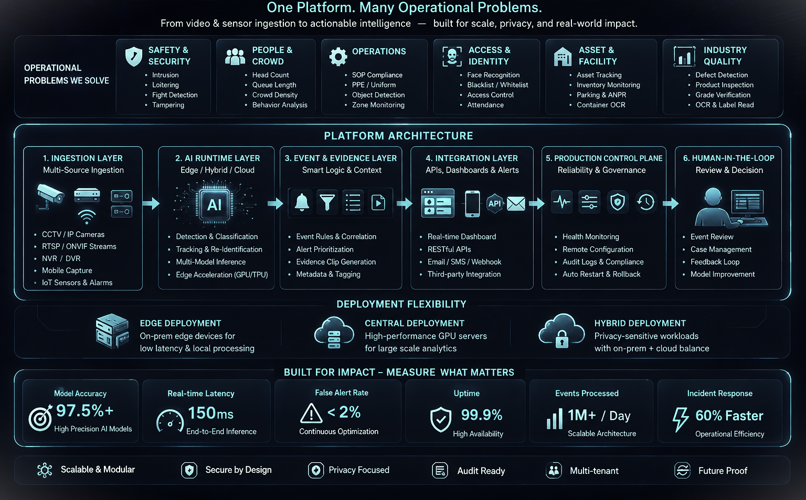

Intelligent Surveillance
Banking and ATM security, intrusion, behavioral analytics, evidence, alerts, face workflows, camera health, and centralized operations.
All major information from the earlier portfolio has been retained, but reorganized into one searchable body of work. Start with the production deployments, then explore the productized capabilities and R&D initiatives that shaped them.
This replaces the earlier separation between “Projects” and “Products.” Each family links real deployments, reusable modules, operational evidence, and future expansion.
Banking and ATM security, intrusion, behavioral analytics, evidence, alerts, face workflows, camera health, and centralized operations.
PPE, virtual fences, work-at-height, staircase rules, unsafe behavior, bale/process intelligence, evidence, and production controls.
Bengali plates, driver association, day/night tuning, parking occupancy, barrier flow, QR/payment state, and searchable gate records.
Container OCR, yard movement, edge AI, forklift and product placement, spatial location mapping, and operational reconciliation.
The recurring architecture is camera/sensor ingestion, AI runtime, event and evidence logic, API/dashboard integration, and a production-control plane for health, configuration, audit, restart, and rollback.

24 projects visible. Open any card for role, challenges, outcomes, metrics, and technology details.
Contact me directly through email, phone, LinkedIn, WhatsApp, Telegram, or a Google Calendar meeting proposal.